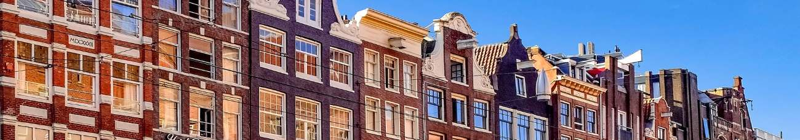

Contact Details
- Telefoon:0182 30 99 24
- Mobiel:06 20 33 90 55
- Email:info@timmerbedrijf-m-burger.nl
Houtrotspecialisatie
Wij zijn gespecialiseerd in houtrotreparatie en werken met hoogwaardige producten om het kozijn te behandelen.
Het aangetaste deel van het kozijn wordt verwijderd en hersteld. De stevigheid van het kozijn blijft hierbij volledig intact. Blijkt plaatselijk herstel niet mogelijk? Geen probleem, wij kunnen u natuurlijk nieuwe kozijnen aanbieden.


Onderhoud en verbouwing
Wij verbouwen uw woning naar uw wensen. Dit kan zowel binnens- als buitenshuis. Denk hierbij aan nieuwe deuren, ramen, kozijnen, radiatorombouwen, kasten of een veranda, vlonder etc. Wij werken alleen met kwaliteitsproducten.
Ook voor het onderhoud van uw woning kunnen wij u van dienst zijn. Onderhoud betekent behoud.
Kortom: voor alles wat met hout te maken heeft, bent u bij ons aan het juiste adres.
Renovatie / Restauratie
We renoveren oude gebouwen zodat ze weer voldoen aan de eisen van deze tijd. Hierbij maken we gebruik van zowel oude als nieuwe materialen en technieken.
De oude uitstraling van uw pand kunnen we renoveren, maar we kunnen uw pand ook een moderne uitstraling geven. Denk hierbij ook aan isolatieglas of dakisolatie.
Wij restaureren ook monumentale panden. Zij behouden hierdoor hun karakteristieke eigenschappen, zoals bijvoorbeeld kozijnen en lijstwerken met authentieke profileringen.

Wie zijn wij?
Timmerbedrijf Marco Burger is een klein bedrijf, gelegen in het midden van het land tussen Woerden, Nieuwegein en Gouda.
Wij werken zonder vast personeel. Hierdoor zijn wij zeer flexibel en gunstig geprijsd met een persoonlijke benadering.
Kwaliteit staat bij ons hoog in het vaandel.
Ook grotere projecten kunnen wij voor u verzorgen. Voor gespecialiseerde werkzaamheden zoals schilderwerk, electra, stucadoorswerk, loodgieterswerk etc. maken wij gebruik van professionele onderaannemers, waarmee wij inmiddels jarenlang ervaring hebben en die net als wij hun vak verstaan.